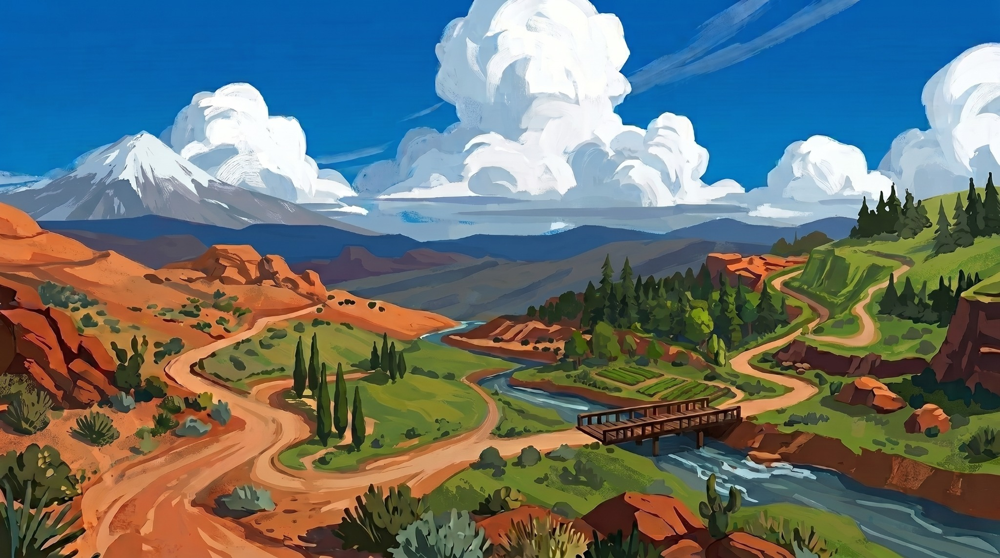

Sharif University of Technology
Tehran, Iran
My master’s and PhD studies at Sharif focused on water resources. A course in GIS and remote sensing sparked my interest in observing water from space.
Places, people & a changing perspective · First design. See the current version →
From Sharif to NASA, following questions about water—and the people and places that helped me ask them.
Explore the landmarks · Hover to discover, click to open

Follow the four chapters. On a phone, tap a landmark or choose a chapter below it.
Curiosity, collaboration, and a few unexpected turns.
Read my NASA career spotlight ↗